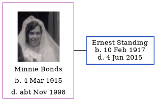

Minnie Margaret Standing (née Bonds) 1915 - c1998
[ Home ] | [ Calendar ] | [ Surnames Index ] | [ Errors ] | [ Family History ]Minnie Bonds, the wife of Ernest Douglas Standing (the fourth cousin once-removed on the father's side of Nigel Horne), was born in Greenwich, London, England on 4 Mar 19151. She married Ernest (a linotype operator) in Greenwich around Aug 19422.
She died c. Nov 1998 in Southend-On-Sea, Essex, England1.
Citations
- England & Wales deaths 1837-2007 - Findmypast
- England & Wales marriages 1837-2008 - Findmypast
Media
Ernest Douglas Standing - Minnie Bonds - Marriage

Ernest Douglas Standing - Minnie Bonds - Marriage
Minnie Margaret Bonds
England & Wales deaths 1837-2007 - BMD/D/1998/10/82806014
England & Wales births 1837-2006 - BMD/B/1915/2/AZ/000142/105
England & Wales marriages 1837-2008 - BMD/M/1942/3/AZ/000127/107
1939 Register Transcription - TNA-R39-0166-0166A-003-33
Family Tree
Map
Generated by ged2site. Last updated on Jul 3, 2024
Known Issues
No records of living with anyone
1939 UK register information missing